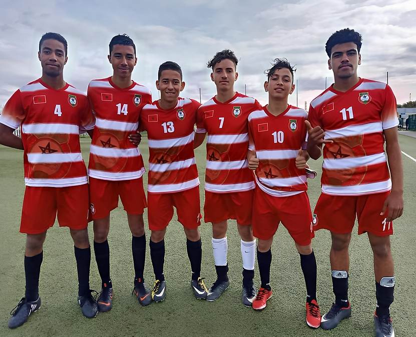
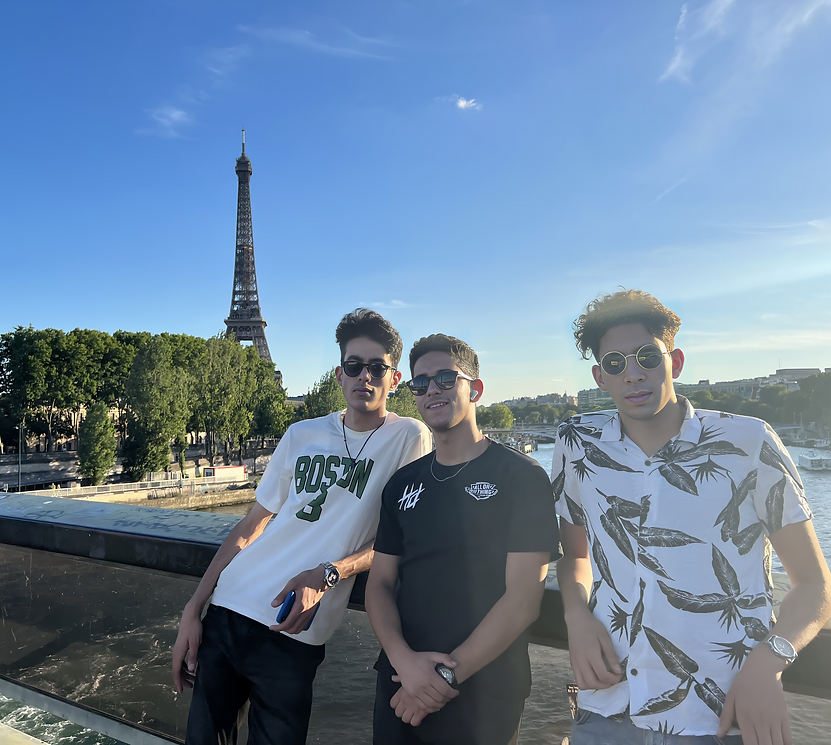

Interest Center
Welcome to the Interests section of my engineering eportfolio. This section showcases my personal interests and hobbies outside of my academic and professional pursuits. Here, you will discover my passions and what drives me to continue to learn, grow, and develop as an individual. From sports and physical activities, music and performing arts to leisurely pursuits such as playing chess and spending time with friends, this section provides a well-rounded view of who I am as a person. My hobbies and interests not only help me to stay active and engaged, but also allow me to develop new skills, pursue my passions, and maintain a healthy work-life balance. I believe that having a diverse range of interests is important for personal growth and overall well-being and I invite you to explore this section to learn more about my personal interests and hobbies.
Sports & Physical Activities
I actually do a lot of sports in my daily life either collective ones or individual ones. I'm into foot-ball, volley-ball, basket-ball, swimming and running all alone.

Programming
I'm a big fan of programming and I'm always trying to learn new languages and frameworks. I'm currently learning Java.I like programming and i aim to boost my skills more and more. I'm learning how to program at school but I looking forward to learn more on my own on my free time.
Music & Performing Arts
I'm a big fan of music and I'm always trying to learn new instruments and songs. I'm currently learning how to make electronic music. I like music and i aim to boost my skills more and more. I'm looking forward to learn more on my own on my free time.

Travelling
I'm a big fan of travelling and I'm always trying to learn new places and cultures. I'm currently learning how to speak German.

It's all about my center interest. I always try to do what I love in my free time to free my mind and relax to prepare for my works and my studies !